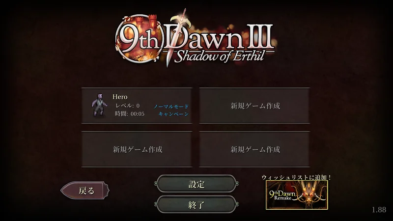
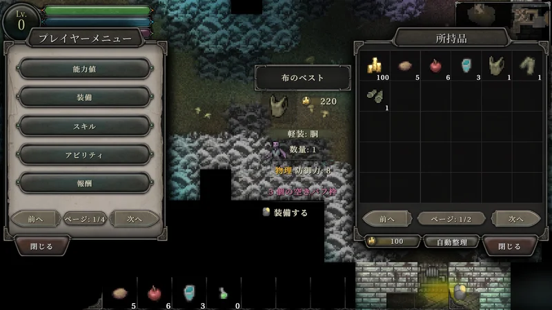
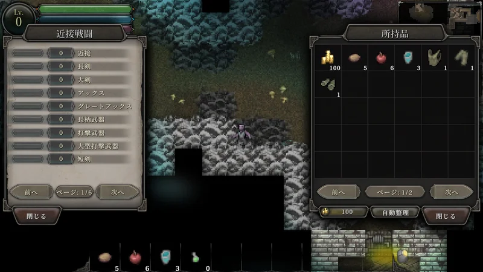
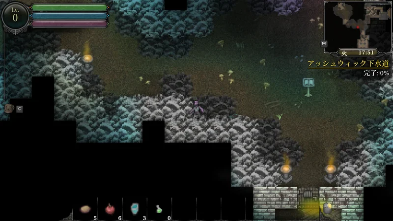

スクリーンショット




日本語化される範囲
- タイトル、メニュー、設定画面、キャラクター作成
- アイテム名と説明、装備・能力値・スキル・アビリティの画面
- チュートリアル、宝箱や入手時のメッセージ
- 戦闘のメッセージ、敵の名前
- NPC との会話、クエスト
導入方法
- リリースページから zip をダウンロードして展開します。
- Steam のライブラリで 9th Dawn III を右クリック →「管理」→「ローカルファイルを閲覧」で、ゲームフォルダ（
9th Dawn III Launcher.exeとGameBinフォルダがあるフォルダ）を開きます。 - zip の中の
GameBinフォルダを、ゲームフォルダにそのままコピーします。「同じ名前のフォルダーがあります」と出たら統合してください（ゲーム本体のファイルは上書きされません）。GameBinの中にwinhttp.dllとBepInExフォルダが増えていれば正しく導入できています。 - いつもどおり Steam からゲームを起動します（ランチャーあり・なし、どちらでも動きます）。
解除するには GameBin フォルダの winhttp.dll を削除してください。
すでに BepInEx 5 を入れて他の MOD を使っている場合は、GameBin\BepInEx\plugins\9thDawnIII_JP フォルダだけをコピーしてください。
日本語にならないとき
ゲームを一度起動したあと、次のファイルができているか確認してください。
GameBin\BepInEx\LogOutput.log（BepInEx のログ）GameBin\BepInEx\plugins\9thDawnIII_JP\jpfix.log（日本語化のログ）
LogOutput.log がない場合（BepInEx が動いていません）
winhttp.dllとdoorstop_config.iniが9th Dawn III.exeと同じGameBinフォルダにあるか確認してください。ランチャーがある一つ上のフォルダに置いても動きません。- ウイルス対策ソフトが
winhttp.dllを削除・隔離していないか確認してください。 - Steam Deck / Linux（Proton）では、ゲームのプロパティの起動オプションに
WINEDLLOVERRIDES="winhttp=n,b" %command%を入力してください。
jpfix.log がある場合
jpfix.logとLogOutput.logを添えて Issues でお知らせください。
対応バージョン
Steam 版 9th Dawn III（Windows 版、Steam ビルドID 22484469）
ゲーム本体のプログラムは書き換えず、文字を表示する処理だけを横取りする方式のため、ゲームが更新されても多くの場合はそのまま動きます。
既知の問題
- 起動時のランチャーは英語のままです。
- タイトルロゴなど、画像になっている文字は英語のままです。
- まだ確認できていない場面（特に会話・お店・ミニゲーム）に、英語のまま残る文や、文のつながりが不自然な箇所がある可能性があります。
- キャラクター名は英字で入力してください。
- 翻訳に不自然な箇所や誤訳が含まれる可能性があります。
英語のまま残った文や誤訳を見つけたら、Issues で教えてください。GameBin\BepInEx\plugins\9thDawnIII_JP\config.ini の dump_untranslated=0 を 1 にすると、訳がなかった文が同じフォルダの untranslated.txt に記録されます。
更新履歴
- v0.1.1（2026-11-24） ウイルス対策ソフトに誤検知されにくいよう、配布版に不要だった試験用のコードを外し、DLL にバージョン情報を入れました。訳文は前の版と同じです。
- v0.1.0 初版
権利・免責
- 「9th Dawn III」の著作権は Valorware に帰属します。本パッチは非公式のもので、Valorware および Valve（Steam）とは関係ありません。本パッチについて Valorware へ問い合わせないでください。
- 本パッチはゲームのファイルを含まず、改変もしません。翻訳辞書は照合用のキーの大半に原文のハッシュ値を使っています。
- 本パッチの使用によって生じたいかなる損害についても、作者は責任を負いません。ご利用は自己責任でお願いします。
- 日本語フォントは「Noto Serif JP」（© 2017-2023 Adobe、SIL Open Font License 1.1）を、使う文字だけに絞り書体名を変えたものです。
同梱ソフトウェア
MOD ローダー BepInEx 5.4.23.6 の公式配布版（Windows x64）を改変せずに同梱しています。ライセンス全文は配布 zip 内の licenses フォルダにあります。
| BepInEx | LGPL-2.1 | github.com/BepInEx/BepInEx（v5.4.23.6） |
| UnityDoorstop | LGPL-2.1 | github.com/NeighTools/UnityDoorstop |
| HarmonyX | MIT | github.com/BepInEx/HarmonyX |
| MonoMod | MIT | github.com/MonoMod/MonoMod |
| Mono.Cecil | MIT | github.com/jbevain/cecil |